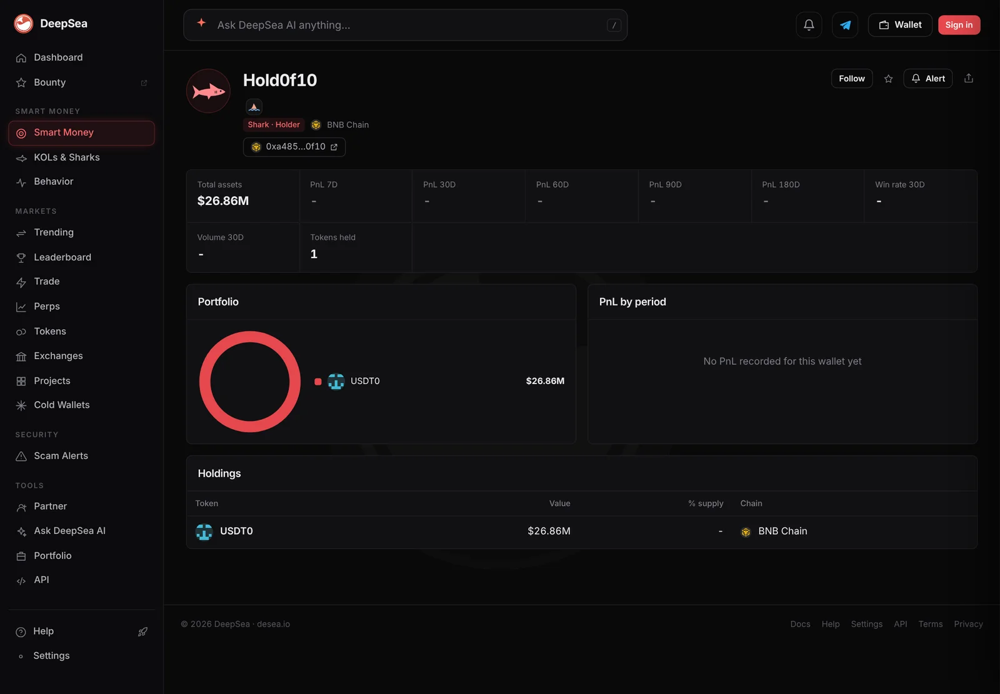

105 sharks lost $23.5 million in a week. One Avalanche trade alone cost $2.29 million
The weekly loss in DeepSea's live feed is 50% bigger than on November 15. Only 24 of 105 big wallets closed the week in profit, making $415,000 together.
Key points
- 105 shark wallets in DeepSea's realized profit table lost $23,506,423 on closed trades in the 7 days to 12:31 a.m. ET on November 25. On November 15 the same count was $15.69 million.
- Only 24 were in profit, making $415,145 together. BNB Chain's 15 sharks lost $9.19 million and Ethereum's 13 lost $7.76 million.
- One Avalanche wallet lost $2,293,617 on a single closed trade, its only one in 30 days. Bitcoin fell 8.1% in the week, CoinGecko shows.
 What DeepSea's data shows
What DeepSea's data shows
DeepSea publishes a realized profit and loss table for wallets in its live feed. Realized means closed trades only, priced first in, first out. LC Insight added up the 7-day figures for every wallet DeepSea tags as a shark, counting an address once per chain. New to DeepSea? Read what it tracks.
The total: 105 sharks, minus $23,506,423. The 24 winners made $415,145 combined. Another 73 lost a total of $23.92 million, and eight were flat. Of 23,887 closed trades, 9,516 made money, about 40%.
Over 30 days, 172 sharks in the table are down $48.34 million, and 44 are in profit. On November 15, 161 sharks were down $27.03 million over 30 days.

Data: DeepSea (desea.io), checked November 25, 2026, 12:31 a.m. ET.
Who lost the most
The biggest loser is again the BNB Chain wallet DeepSea calls Hold0f10. It lost $4.80 million in 7 days on just 3 closed trades, none of them winners, and $9.21 million over 30 days. On November 15 the table had it down $2.75 million for the week. Its DeepSea wallet page now shows $26.86 million in assets, all of it in USDT0, a dollar stablecoin.
A second BNB Chain wallet, ending in 8771, lost $4.05 million across 2,174 closed trades. An Ethereum address ending in 5f60 lost $2.60 million on 6 trades, and an Arbitrum wallet ending in e497 lost $2.46 million on 697.
Then there is the Avalanche wallet ending in c61f. It closed one trade in the past 30 days, and that trade lost $2,293,617.
Biggest 7-day realized losses among DeepSea sharks
US$ million
Source: DeepSea realized PnL table, 7 days to November 25, 2026, 12:31 a.m. ET
Chain by chain
BNB Chain was worst again: 15 sharks, minus $9,188,549, with 2 in profit. Ethereum's 13 sharks lost $7,762,892 and only one made money. Avalanche's 12 lost $3,164,151, and Arbitrum's 5 lost $2,532,175. Optimism had the most sharks, 22, and they lost a modest $571,327.
Base was the one bright spot with 11 sharks up $185,234, led by a wallet ending in c61b that made $241,022. Tron's 9 sharks were roughly flat, up $4,134.

The market around them
Prices kept falling through the week. At 12:44 a.m. ET on November 25, CoinGecko had bitcoin at $58,960, down 8.1% in 7 days and 25.6% in 30. Ether was at $1,651.86, also down 8.1% for the week.
Realized figures count only finished trades. A shark that bought and still holds shows nothing until it sells, so wallets sitting on coins bought higher may have paper losses this table does not show. The table shows what wallets did, not why.
LC Insight analysis
This section is our reading of the facts above, not a statement of fact.
- We think the split tells the story. The 24 winners made about $415,000, while the losers gave up almost $24 million. Size gave these wallets no shelter in a falling week.
- Hold0f10 lost $4.8 million on three trades. A few large closed positions, not constant trading, did most of the damage at the top of the list.
- The 30-day loss has grown from $27 million to $48 million in ten days. We read that as losses speeding up as prices fall.
What's next
- Whether Hold0f10 keeps trading after losing $9.21 million in 30 days.
- Whether the 7-day loss total shrinks if bitcoin holds near $59,000.
- Base sharks, the only chain group in profit this week.
Disclaimer. This article is based on public information and the sources listed below as of the update time shown. It is for information only and is not investment, legal or tax advice. Figures may change as companies and authorities publish new data.
Sources
- DeepSea, realized PnL table, 7 and 30 days (built November 25, 2026, 12:31 a.m. ET)
- DeepSea, Hold0f10 wallet page on BNB Chain (read November 25, 2026)
- DeepSea, wallet page for the Avalanche address ending in c61f (read November 25, 2026)
- CoinGecko, bitcoin price (read November 25, 2026, 12:44 a.m. ET)
- CoinGecko, ether price (read November 25, 2026, 12:44 a.m. ET)